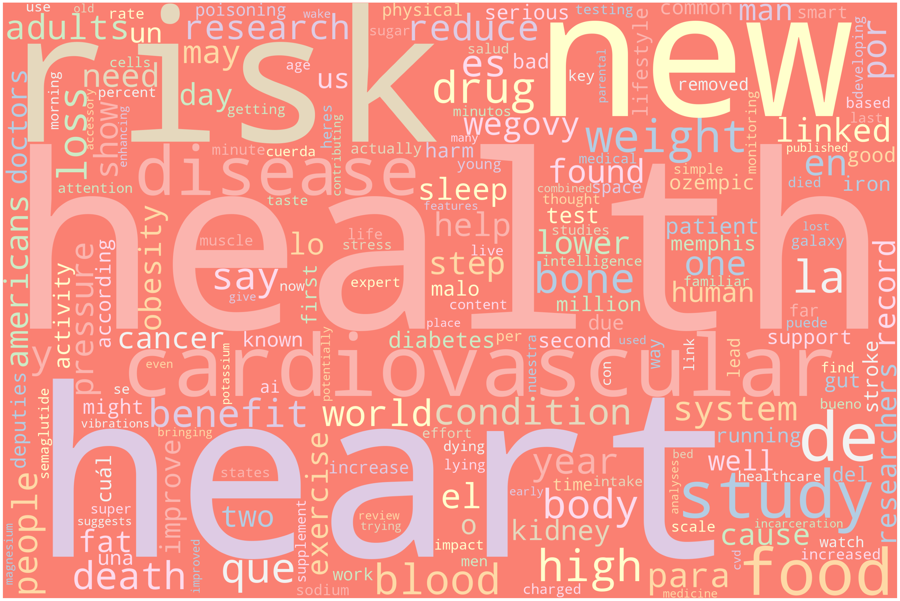

API_KEY='9cf6d393469e41738d84303a9c840fd1'Lab-2.1: Assignment
Lab-2.1: Assignment
Gathering text data with an API
IMPORTANT: The lab shown here (on the website) is just an HTML version, included for reference. To download the assignment, please navigate to the Labs tab in the Share-point dropdown menu in the website’s navigation bar. The relevant assignment can be determined from the folder’s name, click on the three dots & select download to get the assignment.
NOTE: It is recommended that you complete this .ipynb file in VS-code.
Submission:
- Export the completed assignment to HTML or PDF (preferably with Quarto) and upload it to Canvas.
- The final uploaded version should NOT have any code-errors present
- All outputs must be visible in the uploaded version, including code-cell outputs, images, graphs, etc
Assignment-1:
- Read over the
News-API,Wikipedia API, andGoogle ScholarAPI sections in the lab-demonstration section, if you have not done so already. - Get an API key for the
News-API: see following link - Submission: Insert your API key below
Assignment-2:
- Use the provided
News-APIcode as a starting point - Select
THREErandom topics (e.g. Georgetown, Cats, Clouds) but choose whatever you like - Query the API to pull text data and store the results in three different dictionaries
- Extract the
titleanddescriptiontext and store for later processing (up to you how you do this) - Clean the text as needed
# Import
import requests
import json
import re
import pandas as pd
from sklearn.feature_extraction.text import CountVectorizer#Set credentials
baseURL = "https://newsapi.org/v2/everything?"
total_requests=2
verbose=True
# THIS CODE WILL NOT WORK UNLESS YOU INSERT YOUR API KEY IN THE NEXT LINE
API_KEY='9cf6d393469e41738d84303a9c840fd1'TOPICS = ['Cardiovascular']def extract (x):
URLpost = {'apiKey': API_KEY,
'q': '+'+ TOPICS[x],
'sortBy': 'relevancy',
'totalRequests': 1}
# print(baseURL)
# print(URLpost)
#GET DATA FROM API
response = requests.get(baseURL, URLpost) #request data from the server
# print(response.url);
response = response.json() #extract txt data from request into json
# PRETTY PRINT
# https://www.digitalocean.com/community/tutorials/python-pretty-print-json
# print(json.dumps(response, indent=2))
# #GET TIMESTAMP FOR PULL REQUEST
from datetime import datetime
timestamp = datetime.now().strftime("%Y-%m-%d-H%H-M%M-S%S")
# SAVE TO FILE
with open(timestamp+'-newapi-raw-data.json', 'w') as outfile:
json.dump(response, outfile, indent=4)
return response
response1 = extract(0)# Utility function
# Function to clean strings
def string_cleaner(input_string):
try:
out=re.sub(r"""
[,.;@#?!&$-]+ # Accept one or more copies of punctuation
\ * # plus zero or more copies of a space,
""",
" ", # and replace it with a single space
input_string, flags=re.VERBOSE)
#REPLACE SELECT CHARACTERS WITH NOTHING
out = re.sub('[’.]+', '', input_string)
#ELIMINATE DUPLICATE WHITESPACES USING WILDCARDS
out = re.sub(r'\s+', ' ', out)
#CONVERT TO LOWER CASE
out=out.lower()
except:
print("ERROR")
out=''
return outdef clean (response):
article_list=response['articles'] #list of dictionaries for each article
article_keys=article_list[0].keys()
# print("AVAILABLE KEYS:")
# print(article_keys)
index=0
cleaned_data=[];
for article in article_list:
tmp=[]
# if(verbose):
# print("#------------------------------------------")
# print("#",index)
# print("#------------------------------------------")
for key in article_keys:
# if(verbose):
# print("----------------")
# print(key)
# print(article[key])
# print("----------------")
# if(key=='source'):
# src=string_cleaner(article[key]['name'])
# tmp.append(src)
# if(key=='author'):
# author=string_cleaner(article[key])
# #ERROR CHECK (SOMETIMES AUTHOR IS SAME AS PUBLICATION)
# if(src in author):
# print(" AUTHOR ERROR:",author);author='NA'
# tmp.append(author)
if(key=='title'):
tmp.append(string_cleaner(article[key]))
if(key=='description'):
tmp.append(string_cleaner(article[key]))
# if(key=='content'):
# tmp.append(string_cleaner(article[key]))
# if(key=='publishedAt'):
# #DEFINE DATA PATERN FOR RE TO CHECK .* --> wildcard
# ref = re.compile('.*-.*-.*T.*:.*:.*Z')
# date=article[key]
# if(not ref.match(date)):
# print(" DATE ERROR:",date); date="NA"
# tmp.append(date)
cleaned_data.append(tmp)
index+=1
return cleaned_data# Create DataFrame
cleaned_data1 = clean(response1)
df1 = pd.DataFrame(cleaned_data1)
df1['t'] = df1[0] + df1[1]
t1=""
for i in range(len(df1)):
t1 += df1['t'][i]Assignment-3:
- Use the provided
Wikipedia-APIcode as a starting point - For EACH
THREEof the random topics, create a word cloud for your cleanedtitleanddescriptiontext
import wikipedia
def generate_word_cloud(my_text):
from wordcloud import WordCloud, STOPWORDS
import matplotlib.pyplot as plt
# exit()
# Import package
# Define a function to plot word cloud
def plot_cloud(wordcloud):
# Set figure size
plt.figure(figsize=(40, 30))
# Display image
plt.imshow(wordcloud)
# No axis details
plt.axis("off");
# Generate word cloud
wordcloud = WordCloud(
width = 3000,
height = 2000,
random_state=1,
background_color='salmon',
colormap='Pastel1',
collocations=False,
stopwords = STOPWORDS).generate(my_text)
plot_cloud(wordcloud)
plt.show()
df1.to_csv('../../data/00-raw-data/cardiorisk.csv')generate_word_cloud(t1)